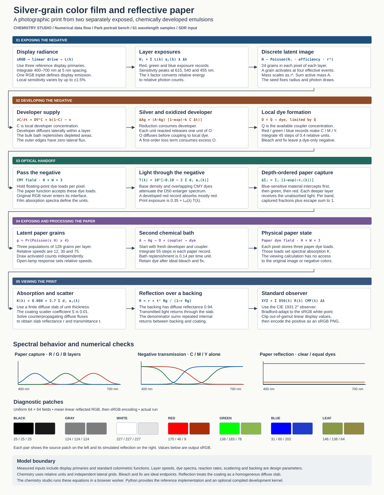

Color emulsion lab
Expose three virtual grain layers, inspect the negative, and make a color print.
OriginalPaper print
‹ ›
Group portrait in the park
How light becomes a print

Expose three virtual grain layers, inspect the negative, and make a color print.
